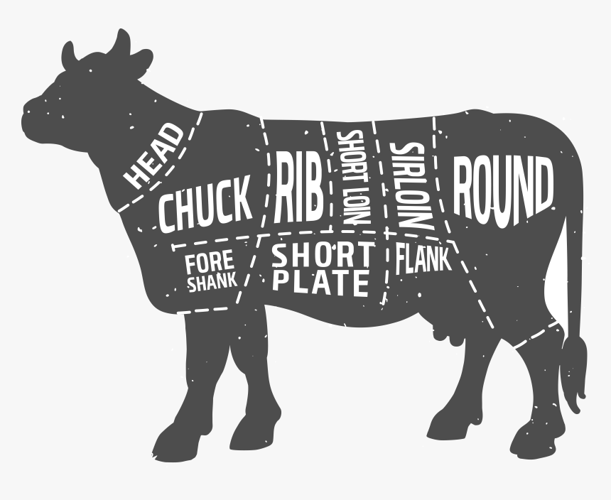
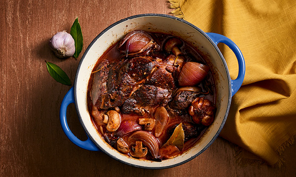
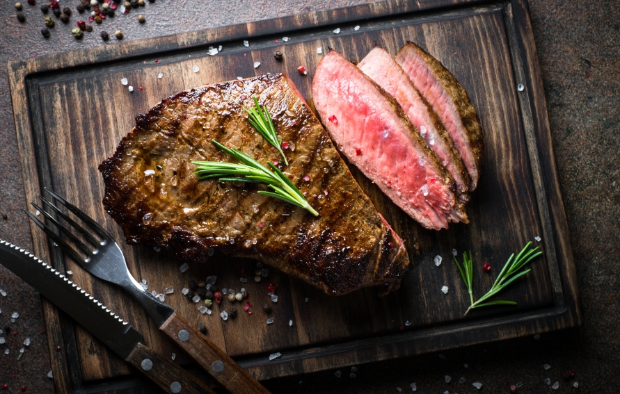
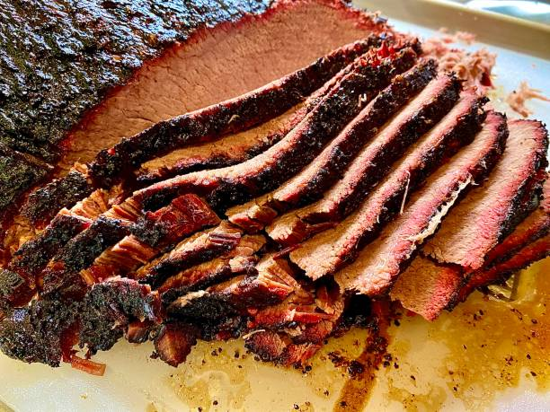
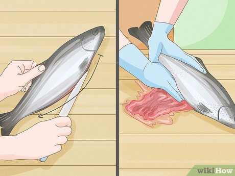

Basics of Cooking Meat
Knowing how to cook different types of meat and their cuts is an important skill. It can help you identify exactly what you need to achieve the greatest tasting dish you ever made. You can also understand how to cook a piece of meat to perfection. I will be explaining how to cook chicken, beef, and fish.
Chicken
Breakdown Of A Chicken
Breaking down a whole chicken may seem like a challenging task but it's actually quite simple. This process in french is called “le poussin”. What you'll need is one whole chicken, scissors, and a sharp knife.
First place the chicken so the spine is facing upward and the breast is down. First spread the wings and make an incision on the skin where the joint is connected. Then you snap the joint and continue cutting to create a perfect wing.
Then, locate the spine, and with the scissors, cut close to the left and right so you remove the spine without any meat. You can save this spine later to make a flavorful chicken broth. There will be bone connecting the breasts together so just cut those bones so it's easier to separate the breasts. You can also just flip the chicken over and press down with two hands in the middle of the breast.
Once the chicken is flipped, it's time to get started on the thighs. Using the knife, seperate the thighs from the chicken. There are no tough joints, so it should easily come off with a knife. Complete this process to both sides. Next, cut the breast down in half with the knife. You will need to apply some amount of force. You should end up with two identical chicken breasts.
Finally, you will separate the chicken thigh and drumstick. Grab the drumstick and make an incision down to separate the thigh and drumstick. When you reach the join, crack it with your hands then complete the separation with your knife.
Breast Vs. Thigh
Chicken meat is separated into white and dark meat. White meat has less fat and more protein than dark meat and includes chicken breast. On the other hand, dark meat has more fat and includes chicken thighs. According to the FDA, the internal temperature should reach 165 F in order to kill off all the bacteria.
Cow

Cooking beef can be difficult as a beginner because there are so many different cuts to choose from. It can be intimidating, so I’ll make a general guide for you to follow.
The 8 sections of beef include the chuck, rib, loin, round, flank, short plate, brisket, and shank. Each has a specific way of cooking that brings out the best flavor.
Chuck
The chuck is the meat that comes from the shoulder of the cow. This part of the cow is much tougher than the rest so you have to cook it in a special way. Types of dishes that go well with this cut of meat include hamburgers, chuck short ribs, and beef stew.
Brisket
The brisket is the breast of the cow and it is very tough, and contains lots of fat. The best way to cook this is low and slow in a smoker for a barbeque. All you do to prepare it is skim some of the fat, add a binder and rub, and let cook slowly for a couple hours on low heat.
Shank
The shank is the cow's forearm in front of the brisket. This is similar to a brisket because it's a tough piece of meat, but as we’ve seen there's a special way to deal with these tough meats. Shanks are great in stews and soups where they’re cooked on low heat.
Ribs
Ribs have an incredible flavor and amazing marbling. Marbling is a term used to describe the amount of intramuscular fat that you can see when inspecting a piece of meat, making it resemble a marble. You could choose ribs when you want a tender cut of beef with a good amount of intramuscular fat.
Plate
The plate is located near the stomach of the cow and is one of these easiest cuts to cook with. It's great for making skirt steak, fajitas, and pastrami.
Loin
The loin is the most expensive cut of meat because of its tenderness and how amazing they taste as a steak. The loin consists of the shortloin and sirloin. The shortloin includes filet mignon, T-bone, and New York Strip. The sirloin includes cuts like a sirloin steak, top and bottom sirloin, and tri-tip roast.
Round
The round is an inexpensive cut of meat and includes the cow’s rump and hind legs, making it tough. It’s often sold as ground beef, but some cuts include the round steak and eye of round.
Flank
The flank is found below the loin and contrary to the loin is a tough piece of meat. This cut of meat is lean, making it ideal for those on a specific diet. A popular cut of the flank is the flank steak.
Different Methods of Cooking
Beef can be cooked in a variety of ways. It can be braised, seared, smoked, etc.
Braising

Braising includes lightly browning the meat on the stove then placing it in a pot in the oven to cook slowly over a couple hours. This is the best method of cooking when working with a tough piece of meat like chuck.
Searing

Searing works well when cooking a steak. It’s simply cooking the steak on a skillet on high heat until you reach the desired temperature. There is a difference on how to cook your steak and everyone has their own opinion, whether it's rare, medium, or well-done. The FDA recommends the internal temp to reach 145 F, but it’s still considered safe if it reaches 120 F as long as you leave it to rest.
Smoking

Smoking meat can be difficult to start with as a beginner, button’t be intimidated. The brisket is the best when you want to smoke anything. After you prepare the meat, you can add a binder as well as a good rub. A binder you can use is mustard, don’t worry you won’t taste it at the end. You can find a good rub to use in any supermarket or you can make your own at home.
Meat vs Ground Beef
You have to be careful when cooking with ground beef because it must be cooked all the way through, unlike a piece of steak. Unlike chicken, bacteria does not penetrate beneath the surface of meat, which is why it's perfectly safe to eat rare steak. When you ground the meat, all the bacteria from the surface is now mixed with the non-contaminated inside. Now you can no longer cook the ground beef rare because of the bacteria.
You might have noticed online dishes where chefs serve raw ground beef. An example is a french dish called beef tartare. Beef tartare is handled a specific way and properly dealt with as to not cause any harm. If you plan on making this dish, notify your butcher so he can give you a lean cut of meat.
Fish
Picking a Fresh Fish
Picking a fresh fish is much simpler than one could imagine. The first thing to check is the eyes of the fish. The eyes should be clear with black pupils. If they’re cloudy then it’s a good indicator the fish is not fresh.
Another factor to check is the gills of the fish. A reddish color indicates that the fish was recently caught, and you should avoid a black or brown color. The gills are where the blood vessels primarily are, so the brighter red it is, the fresher the fish is.
Cleaning A Fish

The way to clean a fish involves gutting it, which is just removing the insides. Place the fish flat down on a cutting board. With a sharp knife, make a straight incision on the belly, but don’t cut all the way through. With the back of your knife, push the guts outside of the fish, or you can remove them with your hands. Finally, wash it thoroughly under the sink.